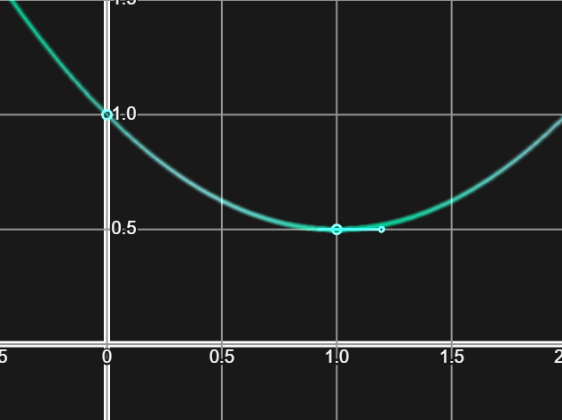

The goal is to create a polynomial function, \(f(x)\), that perfectly fits what the user draws out.
When the user inputs a point or a slope control, that's one piece of information and therefore one equation like
So the question now is, what does \(f(x)\) look like?
So solve \(n\) equations with only one solution, we need \(n\) unknowns. Any more and there might be infinitely many, and any less and there might not be any solutions.
I'll be using the general form of a polynomial, that can be written: \(f(x)=a_0+a_1x+a_2x^2+a_3x^3 +...+a_nx^n\) where \(a_0, a_1, a_2, a_3, ...\) are the unknowns and \(x\) is the input to the function.
Let's do an example
If the user inputs 3 pieces of information, I'll stop at 3 unknowns: \(f(x)=a_0+a_1x+a_2x^2\). Taking the derivative of this, \(f'(x)=a_1+a_2x\)
Let's say the user inputted \(f(0)=1\), \(f(1)=0.5\), and \(f'(1)==0\), which would look like this:
It gives us 3 equations:
To make it more clear for the next step we can rewrite it as
This system of linear equations can be rewritten using a matrix and vectors, in the form \(A\vec{x}=\vec{b}\):
$${ \begin{bmatrix}1&0&0\\1&1&1\\0&1&0.5\end{bmatrix} \begin{bmatrix}a_0\\a_1\\a_2\end{bmatrix} = \begin{bmatrix}1\\0.5\\0\end{bmatrix} }$$ $${ \begin{bmatrix}a_0\\a_1\\a_2\end{bmatrix} = \begin{bmatrix}1&0&0\\1&1&1\\0&1&0.5\end{bmatrix}^{-1} \begin{bmatrix}1\\0.5\\0\end{bmatrix} }$$So to find the coefficients, we have to find the inverse of \(\begin{bmatrix}1&0&0\\1&1&1\\0&1&0.5\end{bmatrix}\) and then multiply it with \(\begin{bmatrix}1\\0.5\\0\end{bmatrix}\).
A way to get a computer to find the inverse of a matrix is with the equation \(A^{-1}=\frac{1}{|A|}adj(A)\), since a computer can find a determinant and adjoint by following simple instructions.
We end up with \(\begin{bmatrix}a_0\\a_1\\a_2\end{bmatrix} = \begin{bmatrix}1\\-1\\0.5\end{bmatrix}\), meaning \(a_0=1\), \(a_1=-1\), and \(a_2=0.5\).
So finally, we have the function \(f(x)=\frac{1}{2}x^2-x+1\) which perfectly fits the user's input.